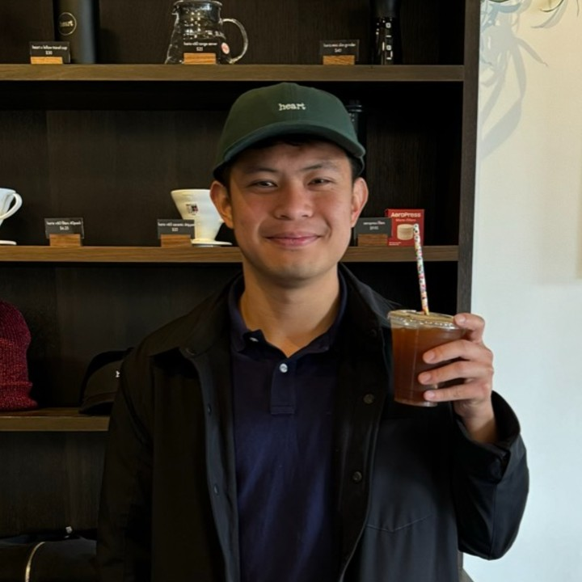
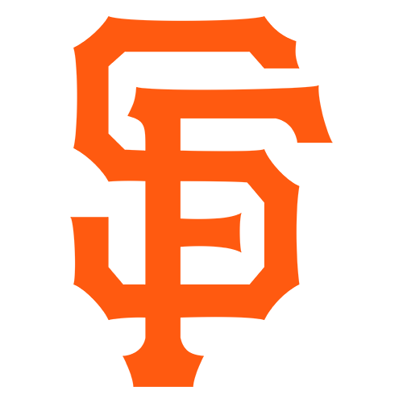

Hello, I’m
Chih Yu Tsai 蔡智宇
Software, data, and the occasional coffee detour.
I studied computer and information technology @ Penn, after a B.A. in Economics @  UC Berkeley.
UC Berkeley.
My work has taken me from health-economic modeling to research software and data pipelines. This is a small collection of the things I’ve worked on—and a few places I’ve stopped for coffee.
Philadelphia, PA

Recent projects in C/C++, Java, and Python.
Things I’ve built.
A few things I’ve built and studied.
Multithreaded HTTP Search Server
From sockets and HTTP parsing to an inverted index and ranked search results.
Compiler Frontend & Language Runtime
A look at how a small language becomes executable, from tokenization to scoped execution.
LC4 Disassembler
Reading binary object files and translating machine code back into LC4 assembly.
Retrieval-Augmented QA
Chunking, reranking, and evaluating whether a question-answering system cites the right evidence.
Where I’ve studied.
A path from economics → computer science.
-
Master of Computer and Information Technology
-

A few places along the way.
Taiwan → California → Pennsylvania
Born and raised in Kaohsiung, in southern Taiwan.
Research & Industry Experience
The places where I’ve worked on software, data, and decisions.
Coffee atlas
Coffee, brewing.
A personal journal of cafés, good cups, and places worth slowing down for.
Vector maps by MapLibre and OpenFreeMap, with OpenStreetMap data. No Google account or device location needed. Map and CDN providers receive normal loading requests.
Outside the usual work.
A little time on the court, a lot of sports to watch.
I enjoy playing tennis, pickleball, and badminton. I also love watching all kinds of sports.
Teams I root for
- Oakland A’s

San Francisco Giants Golden State Warriors
Golden State Warriors San Francisco 49ers
San Francisco 49ers
“Basically, if they’re from the Bay Area, I’m probably rooting for them.”
In no particular order — I love them all.
Notes & observations
Notes, eventually.
A corner for longer thoughts, not just résumé lines.
No posts yet. I’m keeping this space for things I’m learning, building, and thinking about.
More to come.Say hello.
The easiest way to reach me is by email.